Liebe Anna, lieber Christian,
es tut mir sehr leid, dass ich die Chance verpasst habe meine Rede auf eurer Hochzeit zu halten! Alles daran erschien mit einem Mal wahnsinnig unpassend. Da diese Rede kein Publikum mehr haben wird und sich nur noch an euch beide richten wird , habe ich sie noch einmal gänzlich neugeschrieben:
Wer über die Ehe liest wird viele Metaphern wie „Bollwerk“, „sicherer Hafen“ oder „Fels in der Brandung“ finden. Diese Begriffe verweisen sicherlich auf eine nachvollziehbare Sehnsucht danach, den kalten Widersprüchen dieser Welt etwas entgegenzusetzen und – um im militärischen Sprech zu bleiben – nicht allein mit „leeren Händen ins Gefecht zu ziehen“. Um es mit Carrie Bradshaw zu sagen: I can’t help but wonder - bedeutet die Ehe also metaphorisch irgendwie und irgendwo anzukommen? Und wenn ja, nirgendwo mehr hinzuwollen?
Ich hoffe sehr, dass das Mitdenken ihrer sozialen Variabilität und gesellschaftlichen Konstruiertheit etwas ist, das uns verbindet und nicht trennt. Wenn ich also schreibe, dass die Ehe seit hunderten Jahren ganz unterschiedlich gelebt und geliebt, fortgeschrieben, (de-)konstruiert wurde, durchdrungen ist von gesellschaftlichen Machtverhältnissen, überformt und überfrachtet mit teils konträren gesellschaftlichen Erwartungshaltungen, Narrativen und hiesigen Bildwelten und schon immer Zerr- und Spiegelbild politischer Verhältnisse ist, dann hoffe ich, dass ihr das Faktische darin erkennen könnt und es nicht als meine Kritik an eurer gewählten Beziehungsform interpretiert - oder noch schlimmer - als meine Kritik an eurer Lebensweise selbst.
Die diskursive Ebene ist für mich dabei stark abstrahiert von eurer individuellen Entscheidung zu heiraten und dennoch fallen beiden Ebenen fortlaufend und widersprüchlich ineinander: Ich kann die Schönheit und die Bedeutung eurer Geste füreinander erkennen und gleichzeitig die Ehe als Institution irgendwie „entrückt“ finden. Ich fühle mich geehrt, dass ihr mich als Trauzeuge gewählt habt und empfinde aber auch eine ohnmächtige Wut gegenüber dem sakralen Rahmen, in dem ich eure Ehe bezeugt habe – die katholische Kirche, die mir mit ihrer bigotten Unbarmherzigkeit und patriarchalen Selbstgerechtigkeit und ihrem Hass auf queere Menschen den Atem verschlägt. Ich kann die hochintegrative Kraft der Ehe wertschätzen und euch von Herzen gönnen und bin gleichzeitig auf meinen faktischen Ausschluss von dem Sakrament der Ehe zurückgeworfen, der nichts anderes ist und nie etwas anderes war als institutionelle Menschenfeindlichkeit!
Ich würde mir so sehr von euch wünschen, dass meine Gefühle und die Widersprüche, die genau in dem Dazwischen von diskursiver und individueller Ebene entstehen, in unserer Freundschaft einen Raum haben dürfen. Ich hoffe sehr, dass ihr wisst, dass sich die Unversöhnlichkeit meiner Worte und meine diesbezüglichen Gefühle auf keinen Fall gegen euch richten. Ich wünsche mir von euch Nachsicht für mein unbedingtes Verlangen mit diesen widersprüchlichen Gefühlen sichtbar zu sein. Ich wünsche mir, dass die Ehrlichkeit meiner Worte nicht als Zeichen der Geringschätzung verstanden werden, sondern als Zeichen meiner Wertschätzung, meines Vertrauens und meiner Verbundenheit zu euch! Danke Anna von Herzen, dass du mich als Trauzeuge gewählt hast. Ich würde es immer wieder tun!
Ich finde es gibt eine schöne Dialektik in der Ehe, die ich gern mit euch teilen will. Auf der einen Seite existiert da für mich die Beobachtung, dass sie wie keine andere gesellschaftliche Institution von konservativen Politiken so sehr als unveränderliches Bollwerk gegen die Moderne verteidigt und als besonders bedroht & schützenswert inszeniert wird – mit der der Öffnung der „Ehe für (fast) Alle“ ist nun eine weitere konservative „Bastion“ gefallen und ich liebe sehr, dass sie als Sehnsuchtsort für viele Ewiggestrige die ultimative Entwertung erfahren hat. Auf der anderen Seite ist sie genau genommen völlig ungeeignet als Sehnsuchtsort für den Konservatismus – denn wie soll etwas in ihrer imaginierten Ursprünglichkeit bewahrt werden, was einem so starken historischen Wandel unterliegt und mit jeder neuen Eheschließung neu verhandelt und neu ausbuchstabiert wird? Und hier liegt in meiner Wahrnehmung ihr Potenzial.
Für mich ist die Ehe als Solche etwas Trennendes in unserer Freundschaft. Jedoch ist die Auseinandersetzung und der Diskurs über die Art und Weise, wie wir leben möchten und Beziehungen führen wollen, etwas sehr Verbindendes. Ich habe einen kurzen Moment gebraucht, um zu verstehen, dass unsere vielen Gesprächen darüber, die ich besonders mit Anna so genieße, nicht einfach am Traualter auserzählt sein werden, sondern noch intensiver zu führen sein werden- nicht trotz, sondern genau wegen des starken sozialen Skripts, welches die Ehe anbietet und die „gute Beziehung“ ganz selbstverständlich organisieren und garantieren soll. Wenn ich mir etwas von euch wünschen darf, dann dass ihr immer wieder
neu zu verhandeln versucht, wie ihr miteinander und was ihr füreinander sein wollt. Ich wünsche euch sehr, dass ihr etwas Eigenes in der Institution „Ehe“ finden werdet – etwas, das sich dies und jenseits des Skriptes gut für euch anfühlt. Ich freue mich sehr darauf ein Teil davon zu werden.
Malt doch gern ein paar Herzen, bevor ihr weiterlest:
Ich habe mir die Wochen vor eurer Hochzeit sehr viele Gedanken darüber gemacht, was es für mich braucht, um mich für euch freuen zu können – und das tue ich. Nur ist dieses Gefühl für mich erklärungsbedürftig und nicht „einfach so“ oder natürlicherweise entstanden. Ich freue mich für euch, weil ich ganz abseits der Hochzeit, nie darin gezweifelt habe, dass ihr euch gegenseitig guttut. Ich finde im Nachhinein außerdem großartig mit welcher Hingabe ihr die Hochzeitsfeier geplant habt – ihr wart es euch wert und das konnte ich sehen und spüren und ich denke das hat auch sehr viel mit gegenseitiger Wertschätzung zu tun. Herzlichen Glückwunsch, dass ihr euch gefunden habt!
Ich wünsche euch Alles, was ich mir für mich und meine Beziehung auch wünsche: Einen „sicheren Hafen" und einen „Rückzugsort“, ohne den Rückzug ins Private anzutreten und die Solidarität nicht an der eigenen Haustür enden zu lassen! Ich wünsche euch eine Ehe, die die großen Widersprüche im Kleinen nicht ausblendet. Eine Beziehung die Platz hat für das Verständnis und den Kompromiss, aber auch für das Zaudern und den Zweifel. Und für alles, was schön ist; Zuneigung, Unterstützung und radikale Zärtlichkeit!
Ich möchte mich bei euch bedanken:
Vielen Dank für eure Freundschaft, die sicherlich auf einer gemeinsamen Herkunft und Vergangenheit fußt, aber niemals nostalgisch ist und mit jedem Gespräch neu gemacht und gedacht wird.
Danke Witti, dass du immer wieder zu mir sagst, dass ich ein gern gesehener Gast bin und ja ich bin gerne bei euch in Göttingen, denn es ist ein Ort an dem ich mich wenig erklären muss.
Danke für eure Freundschaft, die nicht an ihrem kitschigen Ideal gemessen wird. Sie erfüllt für mich nicht den Wunsch nach Ähnlichkeit und Selbstbestätigung, sondern feiert die Differenz und das genieße ich sehr.
Danke Witti für deine Ausdauer und großen Hingabe, mit der du Dinge machst! Die Vorstellung von dir als zukünftiger Vater macht mich wahnsinnig froh.
Danke besonders dir Anna, dass bei uns kaum etwas ungesagt blieben darf. Ich liebe, dass wir die Welt oft ähnlich interpretieren, und dennoch völlig unterschiedlich sein dürfen. Und es tut mir wahnsinnig leid, wenn ich kritisiere und mir Unbehagen bereitet, was dir wichtig ist und für dich etwas bedeutet. Danke, dass du das mit mir zusammen aushältst.
Danke Anna, dass du mich als Trauzeuge gewählt hast, in dem Wissen, dass ich die habituellen Dissonanzen, die damit automatisch entstehen, auch auffangen kann. Das schmeichelt mir!
Ich danke dir auch für deine cleveren Analysen und deinen Blick auf die Welt, der wenig verurteilend ist und immer nach dem Kontext fragt! Ich habe so viel von dir gelernt, vor allem über Versöhnlichkeit.
Vergesst nie: Ihr seid zwei Süßmäuse und ich wünsch euch Alles!
Bussi bye
Paul
